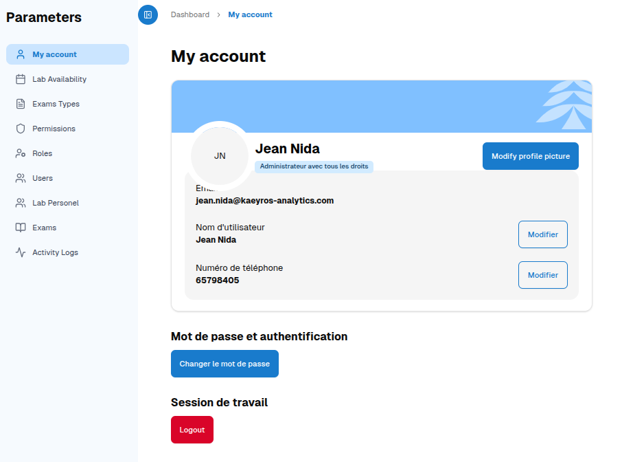
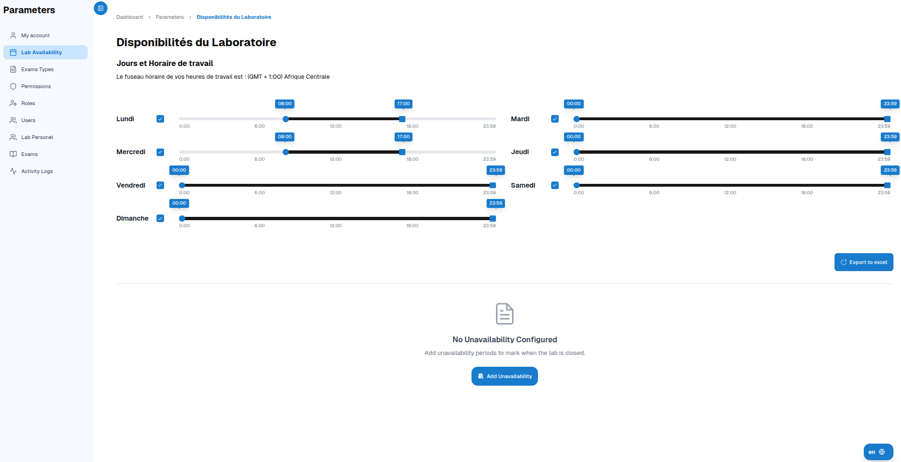
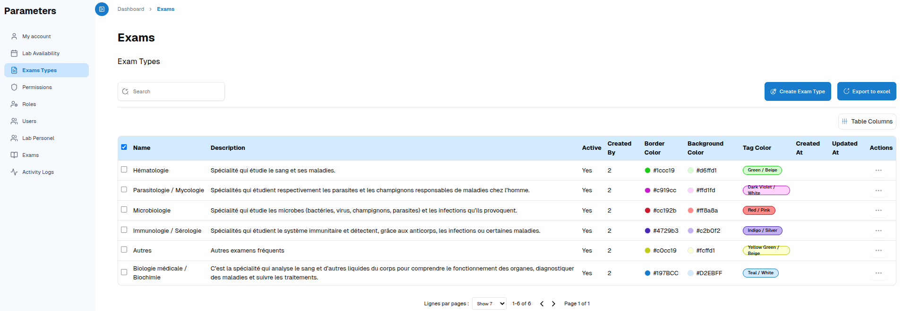
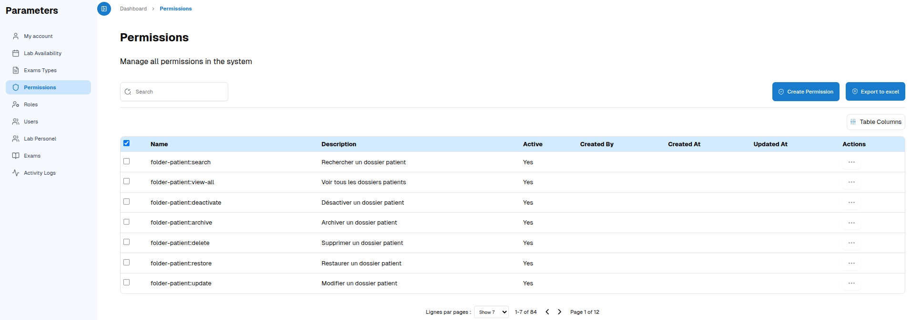
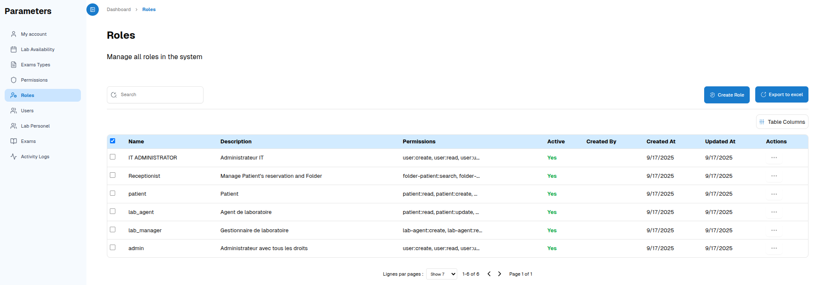
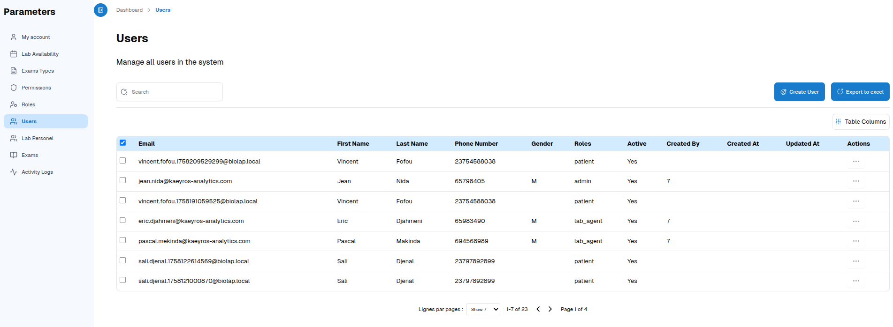
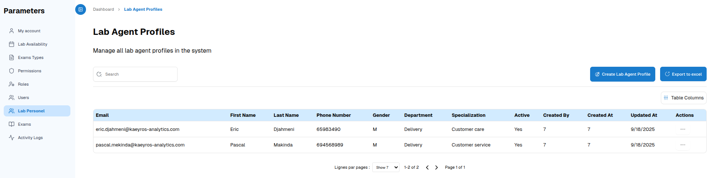
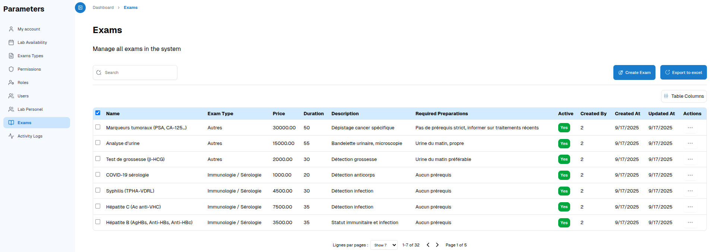

This section allows you to customize your profile and manage advanced system features.
User Profile
Edit your personal information: name, phone number, profile picture.
Change your password for added security.
Log out when finished.
Lab Availability
View the opening and closing schedule.
Download the schedule as an Excel file.
Add unavailabilities to indicate days or times that are unavailable.
Exam Types
Create a new exam type.
Search and view existing types.
Export the list to Excel.
System Permissions
Create new permissions to manage who can access which features.
Enable or disable permissions.
Export permissions to Excel for tracking or reporting.
System Roles
Create and manage roles to organize users by function.
Export the list of roles to Excel.
Users
Create a new user.
Edit or delete an existing user.
Export the list of users to Excel.
Laboratory Agent Profiles
Create and manage agent profiles to assign roles and responsibilities.
System Tests
Create and manage all tests available in the system for the laboratory.